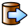
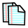

Opties knoppen:
Administration
Vragenlijst
Groep
Je bekijkt momenteel de vraag administratie sectie van LimeSurvey.
Van hieruit kan je deze vraag van de vragenlijst bekijken en bewerken. Als de vraag individuele antwoorden kan hebben, kan je dit ook van hieruit doen. Je kan eveneens condities opgeven of een vraag wel dan niet getoond zal worden aan de hand van het voorwaarden icoon op dit scherm.
|
Opties knoppen: |
|
| Bewerk vraag: Klik hier om de details van de huidige vraag te bewerken. | |
|
|
Wis vraag: Klik hier om deze vraag te wissen. De knop zal enkel zichtbaar zijn als er geen antwoorden bij deze vraag zijn. |
|  | Exporteer vraag: Klik hier om deze vraag, samen met alle antwoorden, te exporteren naar een bestand. |
|  | Kopieer vraag: Klik hier om een kopie van de huidige vraag, samen met alle antwoorden, te maken binnen deze vragenlijst. |
| Stel condities in: Klik hier om de voorwaarden voor deze vraag in te stellen. | |
| Antwoorden: Klik hier om de antwoorden voor deze vraag te bepalen, bewerken, wissen of ordenen. | |
Antwoorden
Klik op het
icoon om antwoorden op deze vraag te bepalen, bewerken, verplaatsen of wissen.
Dit icoon is enkel zichtbaar als de vraag van het type Lijst, Meerkeuze of Matrix is. Deze vraagtypes hebben immers een reeks antwoorden.
Voorwaarden
Klik op het
icoon
om voorwaarden voor deze vraag in te stellen, bewerken of verwijderen.
Dit icoon zal het 'Voorwaarden Ontwerp' venster tonen, die toelaat te bepalen onder welke voorwaarden een vraag al dan niet getoond zal worden. Als je een conditie instelt, zal de vraag NIET getoond worden TENZIJ DE VOORWAARDE VOLDAAN IS.